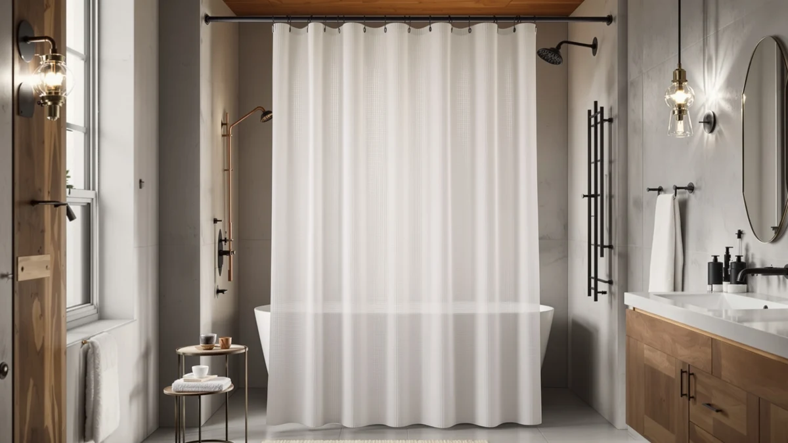

Cannon Heritage Cotton Waffle Shower Curtain Review (2026): Worth It?
Prices and picks verified as of November 2026. Independent, reader-supported reviews.


Quick Answer
Yes, if you want a genuinely 100% cotton shower curtain: the CANNON Heritage Cotton Waffle has a soft, breathable waffle texture in a standard 72 x 72-inch size for $59.99. It skips a built-in liner and waterproof backing, so cotton-curtain shoppers should plan to pair it with a separate liner. At that price, it's a style-first pick rather than the cheapest or most practical option in this comparison.
Our pick: CANNON Heritage Cotton Waffle Ivory, $59.99 Check Price on Amazon
Bottom line: our top pick is the CANNON Heritage Cotton Waffle Ivory Shower Curtain at $59.99.
Things to Know Before You Buy
- The CANNON Heritage Cotton Waffle is 100% cotton, not polyester or PEVA, so it breathes and feels softer against skin but doesn't resist water the way synthetic curtains do.
- It ships in one size, 72 x 72 inches, built for a standard shower or tub alcove rather than a walk-in or extra-long setup.
- There's no waterproof backing included, so most buyers will want to pair it with a separate liner.
- At $59.99 it costs more than most faux-linen or polyester waffle curtains in this comparison, a premium for the natural-fiber material rather than for extra features.
- Reinforced top holes are built in for hanging, but CANNON doesn't list any included hooks in the box.
This CANNON Heritage Cotton Waffle shower curtain review exists because most shower curtain shopping lists are dominated by PEVA and polyester, and buyers who want a genuinely natural-fiber curtain have fewer options to compare. CANNON built this one from 100% cotton in a waffle weave, the same texture found on higher-end towels, and priced it at $59.99, well above the $20 to $35 range where most synthetic waffle curtains sit. That price gap is what this review is really about: does cotton's breathability and feel justify paying roughly twice what a faux-linen or polyester alternative costs.
We built this review the way we build every curtain review on this site: comparing the manufacturer's listed material, size, and price against curtains shoppers commonly cross-shop, rather than running our own physical test. For the CANNON Heritage Cotton Waffle, that means weighing its all-cotton construction and lack of a built-in liner against three alternatives covered below: the ANRODUO Sage Green, an extra-long faux-linen curtain with a waterproof backing and hooks included, plus two linen window-curtain panel sets that turn up in cross-shopping searches but are sized and finished for windows rather than a shower rod.
Why You Should Trust Us
Ilane Tall covers bathroom textiles and hardware for Best Shower Curtains, with a focus on how curtain materials hold up to daily moisture and washing. For this CANNON Heritage Cotton Waffle review, she compared the listed fabric, dimensions, and price against three curtains shoppers commonly cross-shop it with. We do not run a fake testing lab or claim to have hung every curtain we cover ourselves. Our picks come from comparing what's documented in the listing against what verified owners and comparable products report, and we say so plainly, as we do below, when a cross-shopped alternative turns out to be a different kind of product than a shower curtain.
Our Research Experience
We did not hang the CANNON Heritage Cotton Waffle in a shower ourselves. Instead, we researched its listed material, size, and price, and compared it against the three curtains shoppers most often cross-shop it with. CANNON doesn't publish a rating or review count for this listing yet, so there isn't a pattern of verified owner feedback to weigh. Our comparison instead rests on what the manufacturer specifies: 100% cotton construction, a 72 x 72-inch cut, and reinforced top holes for hanging. We flag that gap plainly rather than inventing a star rating or review quotes that don't exist.
Overview & Specs

CANNON Heritage Cotton Waffle Ivory
What we like
- 100% cotton construction feels softer and breathes better than PEVA or polyester
- Waffle weave texture adds visual depth without a busy pattern
- Reinforced top holes are built in for hanging
- Ivory colorway works with most bathroom palettes
Flaws but not dealbreakers
- No waterproof backing or included liner, unlike PEVA-backed curtains
- Ships in one size (72 x 72 inches) with no extra-long option
- At $59.99 it costs roughly double most synthetic waffle curtains in this comparison
- No published rating or review count yet to confirm how it holds up long-term
| Material | 100% cotton |
| Size | 72"W x 72"L (Pack of 1) |
The CANNON Heritage Cotton Waffle solves a specific problem: most waffle-texture shower curtains, including the alternatives below, are polyester or faux linen rather than natural fiber. CANNON cuts this one from 100% cotton in the same waffle weave used on higher-end towels, giving it a softer hand and better breathability than a PEVA-backed curtain, at the cost of the built-in waterproofing those curtains include.
That tradeoff shows up most clearly in price and setup. At $59.99, it costs noticeably more than the faux-linen and polyester options in this comparison, and because it has no waterproof backing, most buyers will want to budget for a separate liner. CANNON hasn't published a rating or review count for this listing yet, so there isn't a pattern of verified owner feedback to weigh. Buyers considering it today are relying on the manufacturer's stated material and construction rather than a track record.
What We Liked
The clearest advantage of the CANNON Heritage Cotton Waffle is the material itself. Among the curtains we compared it against, it's the only one built from 100% cotton rather than polyester or a linen blend, and that shows up in how it feels and breathes compared to a PEVA or faux-linen panel. The waffle texture also gives it visual depth that a flat cotton sheet wouldn't have, without resorting to a busy print.
What Could Be Better
The biggest gap is the lack of a waterproof backing or included liner. Curtains like the ANRODUO Sage Green below ship with a waterproof faux-linen build and 12 hooks already included, while the CANNON requires a separate liner purchase to keep water off the floor. It's also priced well above most of the alternatives here, at $59.99 it costs roughly $15 to $25 more than the faux-linen options, and CANNON hasn't published a rating or review count yet, so there's no track record of verified owner feedback to lean on.
Who Is It For?
This curtain fits a narrow shopper profile: someone who specifically wants a 100% cotton shower curtain and is willing to pair it with a separate liner and pay a premium for the natural fiber. If you care more about breathability and a soft hand than about waterproofing or price, it's one of the few waffle-weave options actually made from cotton rather than polyester or faux linen.
Skip it if you want a curtain-and-liner-in-one solution, a lower price point, or a track record of verified reviews to lean on. The ANRODUO Sage Green below includes a waterproof backing and hooks at a lower price, and its farmhouse aesthetic pairs well with a waffle texture if you're flexible on the cotton requirement.
Alternatives to Consider
Cotton is a narrow requirement, and even shoppers who want it may end up prioritizing price or waterproofing instead. Here's how three curtains that come up in the same searches compare, including two that turned out, on closer look, to be window curtains rather than shower curtains.

Also Great
JINCHAN Lined Linen Curtains Light
Despite showing up in shower curtain searches, the JINCHAN Lined Linen is built and sized as a window drape: two 50 x 108-inch panels with a light-filtering lining meant for a bedroom or living room. It has no waterproofing and isn't marketed for a shower rod, so treat it as a decorative option for a bathroom window rather than a stand-in for the curtain itself.
$49.62
Check Price on Amazon
Also Great
ANRODUO Sage Green Extra Long
The ANRODUO Sage Green is a genuine shower curtain alternative: a 72 x 108-inch faux linen panel with a waterproof backing and 12 metal hooks included, at $44.99, $15 less than the CANNON and with no separate liner purchase needed. It trades 100% cotton for a farmhouse-style faux linen look.
$44.99
Check Price on Amazon
Best Value
Jolilight 2 Panels Set Cream
Like the JINCHAN pick, the Jolilight set is actually a two-panel, 52 x 108-inch window curtain, a semi-sheer linen-polyester blend meant for a living room or hallway window, not a shower rod. At $37.99 it's the cheapest product in this comparison, but only as a window treatment, not a shower curtain substitute.
$37.99
Check Price on AmazonDoes the CANNON Heritage Cotton Waffle shower curtain come with a liner?
No.
What size is the CANNON Heritage Cotton Waffle curtain?
It ships in a single 72 x 72-inch size, which fits a standard shower or tub alcove.
Frequently Asked Questions
Does the CANNON Heritage Cotton Waffle shower curtain come with a liner?
No. It's 100% cotton with no waterproof backing, so you'll need a separate liner to keep water off the bathroom floor. See our cotton-friendly liner picks if you want a liner that matches the natural-fiber look.
What size is the CANNON Heritage Cotton Waffle curtain?
It ships in a single 72 x 72-inch size, which fits a standard shower or tub alcove. If your rod is mounted higher or your tub is longer than standard, an extra-long curtain like the ANRODUO Sage Green below, cut to 72 x 108 inches, will fit better.
How does the CANNON Heritage Cotton Waffle compare to the ANRODUO Sage Green alternative?
The CANNON is 100% cotton in a 72 x 72-inch size for $59.99 with no liner or hooks included. The ANRODUO is a faux linen curtain cut to 72 x 108 inches for $44.99, and it ships with a waterproof backing and 12 metal hooks already in the box. Choose the CANNON for genuine cotton; choose the ANRODUO for a lower price and a ready-to-hang waterproof setup.
Final Verdict
This CANNON Heritage Cotton Waffle review comes down to one tradeoff: genuine 100% cotton versus price and convenience. CANNON is the only truly natural-fiber waffle curtain in this comparison, with a soft hand and breathability that polyester and faux linen can't match, but it skips a built-in liner and costs $59.99, more than any alternative here. If cotton itself is the point, it's worth the premium. If you'd rather have a waterproof curtain ready to hang out of the box, the ANRODUO Sage Green below costs less, ships with hooks, and doesn't require a separate liner purchase.